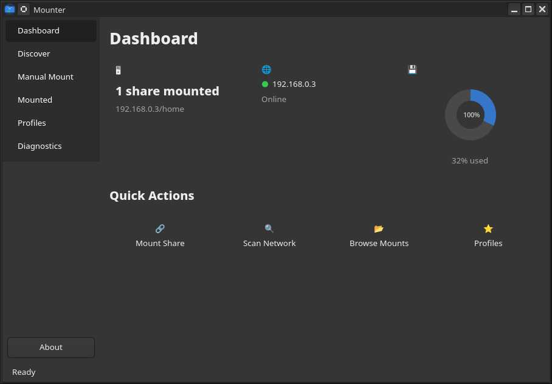
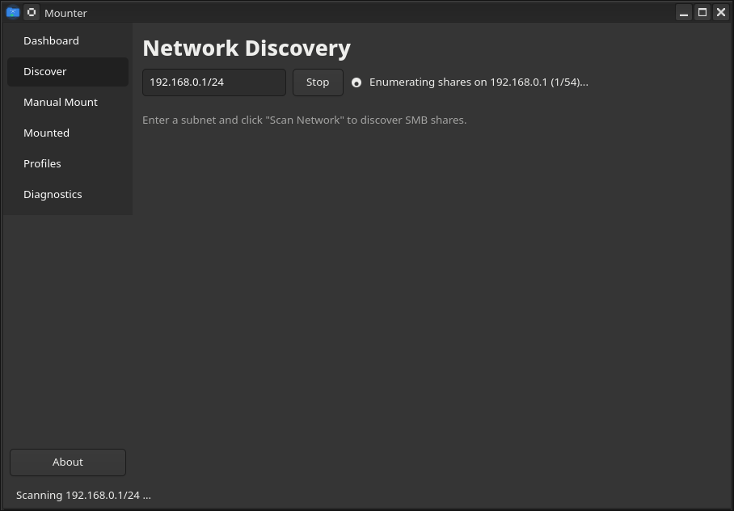
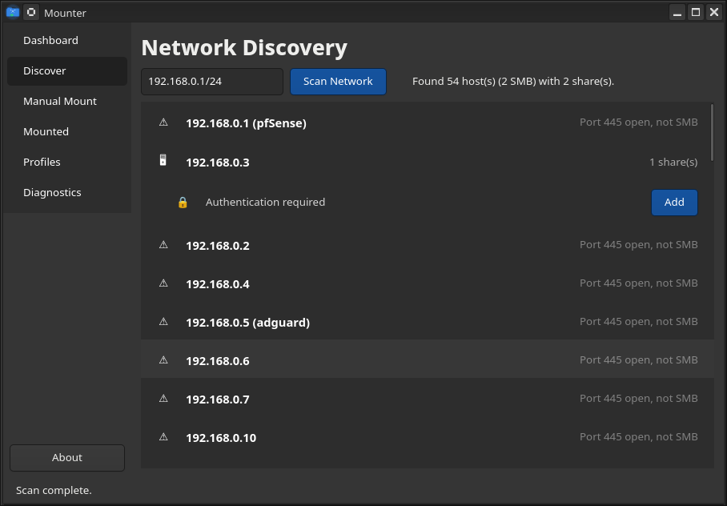
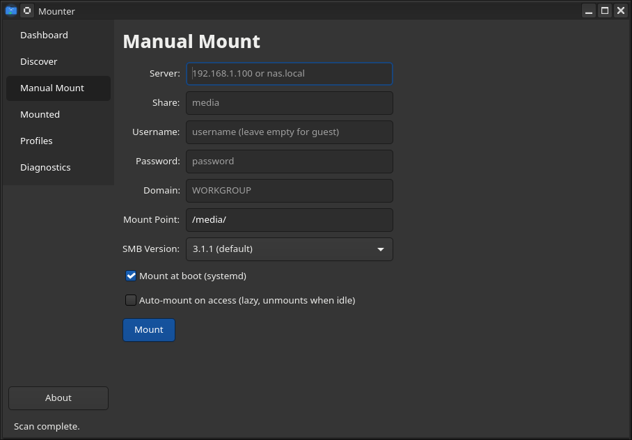
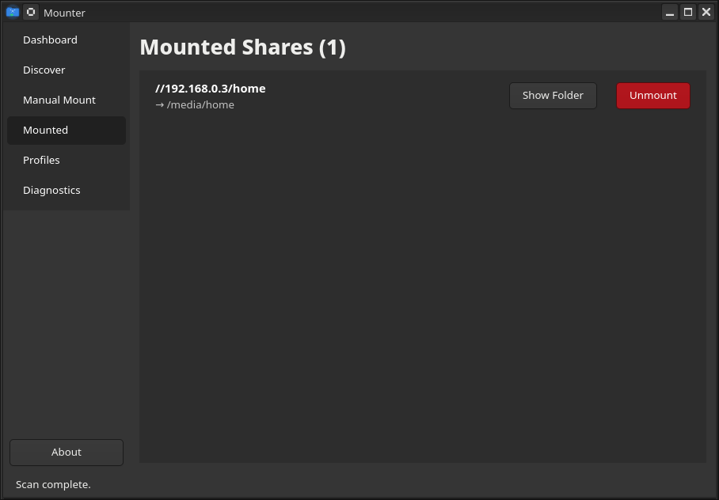
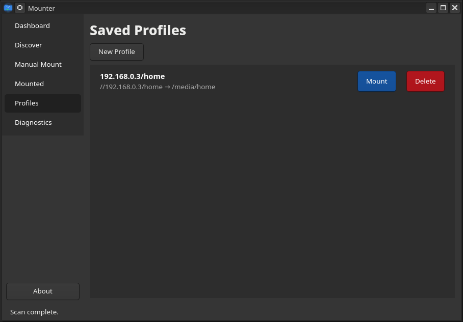
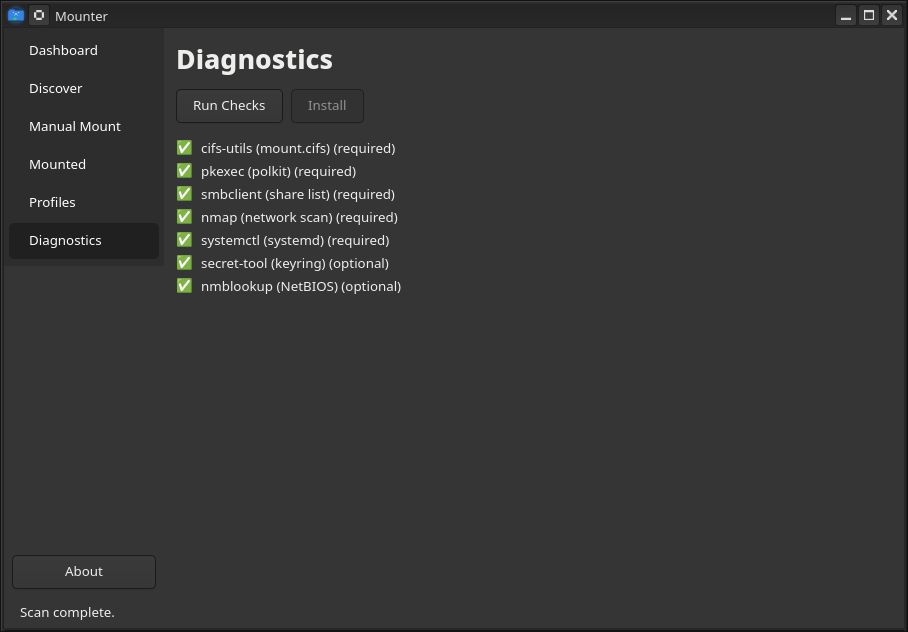
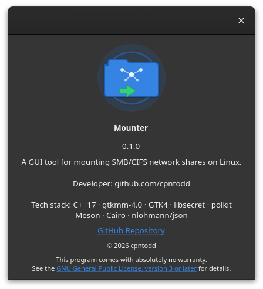

💾 Mounter
A GUI tool for mounting SMB/CIFS network shares on Linux
⬇ One-Line Install
curl -fsSL https://cpntodd.github.io/Mounter/install-mounter.sh | bashVia APT Repository
echo "deb [signed-by=/etc/apt/keyrings/mounter.asc] https://cpntodd.github.io/Mounter/repo stable main" | \
sudo tee /etc/apt/sources.list.d/mounter.list
sudo curl -fsSL https://cpntodd.github.io/Mounter/repo/mounter.asc -o /etc/apt/keyrings/mounter.asc
sudo apt update && sudo apt install mounter✨ Features
🔍 Network Discovery
Scans your local subnet with nmap to find SMB hosts. Lists available shares per host. One-click Add prefills the mount form with server info.
🔗 Manual Mount
Complete SMB mount form with credential management. Mount point auto-clones share name. Credentials auto-filled from system keyring.
📊 Dashboard
Live status cards: mount count, server reachability (ping indicator), disk usage (Cairo donut chart). Quick-action buttons for all functions.
💾 Persistent Mounts
Two options: mount at boot (systemd .mount) or auto-mount on access (systemd .automount with idle timeout).
| Feature | Detail |
|---|---|
| Language | C++17 |
| GUI | gtkmm-4.0 / GTK4 |
| Build | Meson + Ninja |
| Auth | polkit + pkexec |
| Credentials | libsecret (Secret Service) |
| Persistence | systemd .mount / .automount |
| Package | .deb (241 KB), Flatpak, APT repo |
| License | GPL-3.0-or-later |
📸 Screenshots
Click to expand — 9 screenshots
 Dashboard |
Network Scan |
 Share Enumeration |
 Discovery Results |
 Manual Mount |
 Mounted Shares |
 Saved Profiles |
 Diagnostics |
 About Dialog |
🏗 Build from Source
sudo apt install -y meson libgtkmm-4.0-dev libsecret-1-dev \
libpolkit-gobject-1-dev nlohmann-json3-dev libadwaita-1-dev
git clone https://github.com/cpntodd/Mounter.git
cd Mounter
meson setup build
meson compile -C build
sudo meson install -C build
mounter🧱 Architecture
┌─────────────────────────────────────────┐
│ mounter (GUI) │
│ Dashboard · Discover · Mount · ... │
│ ───────────────────────────────── │
│ Core: MountOp · Monitor · CredStore │
├─────────────────────────────────────────┤
│ pkexec / polkit │
├─────────────────────────────────────────┤
│ mounter-helper (root) │
│ mount · umount · creds · systemd │
└─────────────────────────────────────────┘